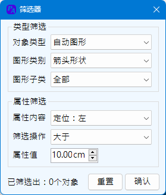
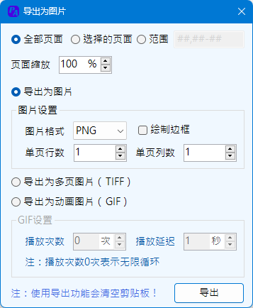
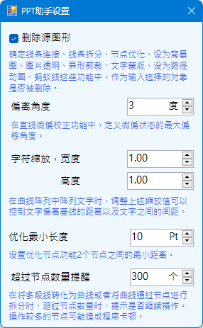

Ribbon菜单PPT助手的其他功能、插件设置及插件说明。
本功能用于定制化生成中国行政区划地图以及世界地图，地图主界面如下：

程序首次开启地图功能时，会将地图文件读入到内存中。地图类型分为4大类型全国地图、省级区划、地级区划以及世界地图四类。右侧为绘制地图的设置，包括：
地图尺寸：可选择以幻灯片大小等大的区域作为地图输出大小，也可以指定一个尺寸长宽作为输出大小。
输出格式：勾选绘制为图形时，程序将使用PPT的多段线、自动图形绘制地图。优点是可以后续自行编辑图形，修改颜色，边框以及添加文字等；缺点是将生成大量的图形对象，且生成速度比较慢，尤其是大面积地图，例如世界地图。不勾选则输出PNG图片，背景为透明色。
随机填色：勾选时，地图如果绘制区域超过2个时，每个区域将设定为一个随机颜色。此处的区域指输出中定义为同一个名称的区域，例如某个县市实际由多个小岛多个部分组成 ，那么所有的这些部分都是一个区域。
绘制下级区划：该选项对中国地图部分有效，世界地图部分无效。勾选该选项时，如果类型为全国地图，则最小绘制区域为省级区划；类型为省级区划，最小绘制区域为地级区划；类型为地级区划时，最小绘制区域县级区划。
绘制国界九段线：仅在全国地图类型时生效。
城市标记：分为省会城市、地级城市、县级城市，其点位均为地图记录的辖区行政中心的位置。当地图类型为全国地图时可标记省会城市，当选择为省级区划时，可标记省会城市和地级城市，当选择为地级区划时，可标记地级城市和县级城市。
地图样式（仅针对PNG格式）：当绘制PNG图片类型的地图时，可通过地图样式设置界面对地图线条、填色进行设置。样式设置界面如下：

地图样式以广东省地级地图区划为样式，通过效果预览可查看当前设置下的地图绘制效果。如已设置了随机填充颜色，那么对于填充区域的颜色设置将不再有效，但透明度设置仍然生效。完成设置后，必须通过确认设置来关闭窗口，否则当前的设置不会被应用到地图绘制，仍将以之前的设置绘制地图。
关于地图生成器的特别说明：
本功能可用于筛选出当前选择集范围内，或者当前幻灯片范围内符合设定的内容。本功能使用的情景为：当幻灯片内使用了大量的小而多的图形样式，需要进行统一的调整、修改、删除时，通过筛选方式一次性的将其选中。
类型筛选，这里的对象类型基本函盖了所有PPT中所有的对象类型，当筛选类型中包含自动图形或者标注类图形时，自动图形类型筛选将启用。需要注意的是，如果类型筛选中勾选的是自动图形类型未勾选标注，但在自动图形类型中确勾选的是标注类型，此时选择器不会生效。即自动图形类型仅在对应的类型被勾选时才生效。
属性筛选，仅对主要的三类属性进行筛选，有无边框、有无填充、有无文本内容。属性的有与无是互斥选项，都不勾选时表示不对此项进行筛选。
如果确认筛选之前，已存在选择集，则从选择集中进行筛选，如果未选择，则从当前幻灯片内进行筛选。完成筛选后，筛选的对象将放入当前选择集中。筛选器中只会包含当前选择集或者当前幻灯片中包含的类型。
选择器仅在图形选择状态或者无选择状态生效，当进入文本输入或者幻灯片选择状态时，不生效。本功能仅进行对象选择，不进行任何其他操作。
本共功能可以将PPT文件导出为PNG，JPG，TIFF，GIF格式的图片。
页面范围，可以设定为全部导出或者部分导出。部分导出时，可以通过PPT页面导航器选择一些页面导出，也可以设定不连续的页面或者局部连续的页面。不连续页面之间用逗号分隔（半角），连续页面之间使用短横杠（半角）连接，例如：1,5-10,15。
页面缩放，默认情况下以PPT设置的页面大小为基准大小尺寸进行导出。可调节缩放范围为20%~200%。
导出为图片，指导出为PNG或JPG类型的图片，同时可以进行画面拼接，指定单页即单文件的行列数，程序将按页面顺序进行拼接，超过1个文件时将继续输出图片，直至所选页面输出完成。绘制边框，当拼接图片时，为清晰不同页面之间的分界，可以勾选绘制边框。
导出为多页图片（TIFF），将所选的页面导出成单一的Tif文件，该文件格式可以承载多个页面的图片。
导出为动画图片（GIF），将所选的页面导出为一个GIF动画格式的图片，可以按照设定的延迟以及播放次数播放
关于导出图片的特别说明：
本程序的内置设置，该类设置将保存至硬盘，后续任何时候执行程序时均生效。
删除源图形，对于线条连接、线条拆分、节点优化、设为背景图、图片透明、异形剪裁、文字蒙版、设为路径动画、蚂蚁线这些操作，程序均为对选择的图形对象进行转换，取用了源图形的信息，数据，生成了新的图形替代源图形，程序根据此设定确定是否在执行完功能后删除这类所选的源图形。但需要注意，例如图片透明这类功能，如果选择保留源图形，则执行操作后，做过透明处理的图片将重叠于源图形之上，可能会让操作看起来像啥也没做。
云线弧半径控制绘图功能中绘制云线功能采用的云线半径大小，以磅为单位。系数指云圈梳密程度，取值范围0.1~1.0。为了保证云线效果，在设置系数的同时，程序会控制圆弧半径的最小值取值，以确保圆心间距不会过小。
偏离角度，指执行直线微偏校正时，用于判断直线的微偏状态的参数。位于1°~30°之间。
标注界线长度控制标准功能中，绘制绘制的尺寸界限标记的线段的长度。如果不想显示这个标记符号，可以勾选隐藏界线
字符缩放，参考曲线阵列中关于文本阵列的相关说明，该两处设置用于控制阵列时文字间距。
优化最小长度，当使用节点优化功能对曲线节点进行优化时，优化后两个节点之间的最小长度。值越大，对于节点而言，能优化的数量越多，但是未必能精确还原源图形。值越小，优化节点的数量就越少，但是可以更精确的模拟源图形。
超过节点数量提醒指使用节点操作功能时，如果节点数量操过设定值时，程序会发出提醒，当确认继续操作时，才会执行操作。部分操作节点过多时，程序可能会响应缓慢。
返回首页